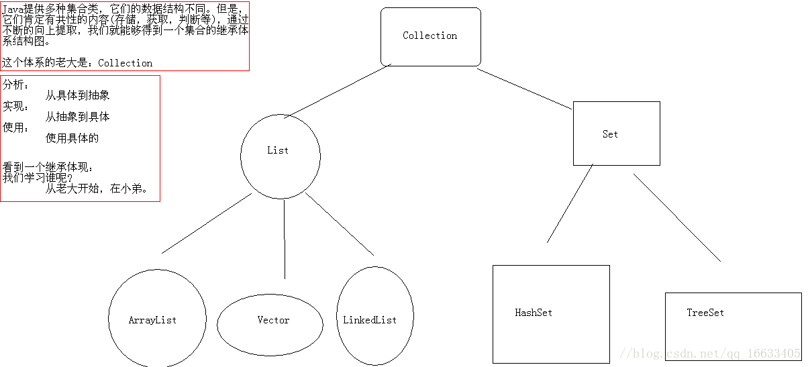

1.什么是Java虚拟机？为什么Java被称作是“平台无关的编程语言”？
Java虚拟机是一个可以执行Java字节码的虚拟机进程。Java源文件被编译成能被Java虚拟机执行的字节码文件
2.“static”关键字是什么意思？Java中是否可以覆盖(override)一个private或者是static的方法？
“static” 关键字表明一个成员变量或者是成员方法可以在没有所属的类的实例变量情况下访问。
Java中static方法不能被覆盖，因为方法覆盖是基于运行时动态绑定的，而static方法是编译时静态绑定的。static方法跟类的任何实例都不相关，所以概念上不适用。
3.是否可以在static环境中访问非static变量？
static变量在Java中是属于类的，它在所有的实例中的值是一样的。当类被Java虚拟机载入的时候，会对static变量进行初始化。如果你的代码尝试不用实例来访问非static的变量，编译器会报错，因为这些变量还没有被创建出来，还没有跟任何实例关联上。
4.Java支持的数据类型有哪些？什么是自动拆装箱？
Java语言支持的8中基本数据类型是：
自动装箱是Java编译器在基本数据类型和对应的对象包装类型之间做的一个转化。比如：把int转化成Integer，double转化成double，等等。反之就是自动拆箱。
简单来说，装箱就是自动将基本数据类型转换为包装器类型；拆箱就是自动将包装器类型转换为基本数据类型。
5.Overload和Override的区别。Overloaded的方法是否可以改变返回值的类型?
方法的重写Overriding和重载Overloading是Java多态性的不同表现。重写Overriding是父类与子类之间多态性的一种表现，重载Overloading是一个类中多态性的一种表现。如果在子类中定义某方法与其父类有相同的名称和参数，我们说该方法被重写(Overriding)。子类的对象使用这个方法时，将调用子类中的定义，对它而言，父类中的定义如同被”屏蔽”了。如果在一个类中定义了多个同名的方法，它们或有不同的参数个数或有不同的参数类型，则称为方法的重载(Overloading)。Overloaded的方法是可以改变返回值的类型。
6.Java支持多继承么？
不支持，Java不支持多继承。每个类都只能继承一个类，但是可以实现多个接口。
7.接口和抽象类的区别是什么？
Java提供和支持创建抽象类和接口。它们的实现有共同点，不同点在于：
8.什么是值传递和引用传递？
对象被值传递，意味着传递了对象的一个副本。因此，就算是改变了对象副本，也不会影响源对象的值。
对象被引用传递，意味着传递的并不是实际的对象，而是对象的引用。因此，外部对引用对象所做的改变会反映到所有的对象上。
简单来说，值传递改变不会影响源对象，而引用传递改变要影响所有对象
9.创建线程有几种不同的方式？你喜欢哪一种？为什么？
有三种方式可以用来创建线程：
实现Runnable接口这种方式更受欢迎，因为这不需要继承Thread类。在应用设计中已经继承了别的对象的情况下，这需要多继承（而Java不支持多继承），只能实现接口。同时，线程池也是非常高效的，很容易实现和使用。
10.同步方法和同步代码块的区别是什么？
在Java语言中，每一个对象有一把锁。线程可以使用synchronized关键字来获取对象上的锁。synchronized关键字可应用在方法级别(粗粒度锁：这里的锁对象可以是This)或者是代码块级别(细粒度锁：这里的锁对象就是任意对象)。
11.什么是死锁(deadlock)？
两个进程都在等待对方执行完毕才能继续往下执行的时候就发生了死锁。结果就是两个进程都陷入了无限的等待中。
代码表示：
代码描述：
1 public class DieLockDemo {
2 public static void main(String[] args) {
3 DieLock dl1 = new DieLock(true);
4 DieLock dl2 = new DieLock(false);
5
6 dl1.start();
7 dl2.start();
8 }
9 }
10 *...理想状态下dl1线程为true从if执行先打出"if objA"然后再接着打出"if objB"之后释放A、B的锁对象，之后dl2线程执行else语句打出"else objB"，"else objA"。
11 非理想状态下dl1先打出"if objA"，之后线程dl2执行打出"else objB"，然后1、2线程的锁对象A和B都处于被锁的状态，两个线程争夺锁对象发生死锁现象。..*
12 public class DieLock extends Thread {
13 private boolean flag;
14 public DieLock(boolean flag) {
15 this.flag = flag;
16 }
17 @Override
18 public void run() {
19 if (flag) {
20 synchronized (MyLock.objA) {
21 System.out.println("if objA");
22 synchronized (MyLock.objB) {
23 System.out.println("if objB");
24 }
25 }
26 } else {
27 synchronized (MyLock.objB) {
28 System.out.println("else objB");
29 synchronized (MyLock.objA) {
30 System.out.println("else objA");
31 }
32 }
33 }
34 }
35 }12.如何确保N个线程可以访问N个资源同时又不导致死锁？
使用多线程的时候，一种非常简单的避免死锁的方式就是：指定获取锁的顺序，并强制线程按照指定的顺序获取锁。因此，如果所有的线程都是以同样的顺序加锁和释放锁，就不会出现死锁了。
13.Java集合类框架的基本接口有哪些？
Java集合类提供了一套设计良好的支持对一组对象进行操作的接口和类。Java集合类里面最基本的接口有：
14.什么是迭代器(Iterator)？
Iterator接口提供了很多对集合元素进行迭代的方法。每一个集合类都包含了可以返回迭代器实例的迭代方法。迭代器可以在迭代的过程中删除底层集合的元素。
15.Iterator和ListIterator的区别是什么？
下面列出了他们的区别：
16.Java中的HashMap的工作原理是什么？
Java中的HashMap是以键值对(key-value)的形式存储元素的。HashMap需要一个hash函数，它使用hashCode()和equals()方法来向集合/从集合添加和检索元素。当调用put()方法的时候，HashMap会计算key的hash值，然后把键值对存储在集合中合适的索引上。如果key已经存在了，value会被更新成新值。HashMap的一些重要的特性是它的容量(capacity)，负载因子(load factor)和扩容极限(threshold resizing)。
17.HashMap和Hashtable有什么区别？
o 一般认为Hashtable是一个遗留的类。
18.数组(Array)和列表(ArrayList)有什么区别？什么时候应该使用Array而不是ArrayList？
下面列出了Array和ArrayList的不同点：
19.ArrayList和LinkedList有什么区别？
ArrayList和LinkedList都实现了List接口，他们有以下的不同点：
也可以参考ArrayList vs. LinkedList。
20.如何权衡是使用无序的数组还是有序的数组？
有序数组最大的好处在于查找的时间复杂度是O(log n)，而无序数组是O(n)。有序数组的缺点是插入操作的时间复杂度是O(n)，因为值大的元素需要往后移动来给新元素腾位置。相反，无序数组的插入时间复杂度是常量O(1)。
21.HashSet和TreeSet有什么区别？
HashSet是由一个hash表来实现的，因此，它的元素是无序的。add()，remove()，contains()方法的时间复杂度是O(1)。
另一方面，TreeSet是由一个树形的结构来实现的，它里面的元素是有序的。因此，add()，remove()，contains()方法的时间复杂度是O(logn)。
22.Java中垃圾回收有什么目的？什么时候进行垃圾回收？
垃圾回收的目的是识别并且丢弃应用不再使用的对象来释放和重用资源。
23.如果对象的引用被置为null，垃圾收集器是否会立即释放对象占用的内存？
不会，在下一个垃圾回收周期中，这个对象将是可被回收的。
24、String是最基本的数据类型吗?
基本数据类型包括byte、int、char、long、float、double、boolean和short。
java.lang.String类是final类型的，因此不可以继承这个类、不能修改这个类。为了提高效率节省空间，我们应该用StringBuffer类
25、int 和 Integer 有什么区别
Java 提供两种不同的类型：引用类型和原始类型（或内置类型）。Int是java的原始数据类型，Integer是java为int提供的封装类。Java为每个原始类型提供了封装类。
26、String 和StringBuffer的区别
JAVA平台提供了两个类：String和StringBuffer，它们可以储存和操作字符串，即包含多个字符的字符数据。这个String类提供了数值不可改变的字符串。而这个StringBuffer类提供的字符串进行修改。
27、说出ArrayList,Vector, LinkedList的存储性能和特性
ArrayList 和Vector都是使用数组方式存储数据，此数组元素数大于实际存储的数据以便增加和插入元素，它们都允许直接按序号索引元素，但是插入元素要涉及数组元素移动等内存操作，所以索引数据快而插入数据慢，Vector由于使用了synchronized方法（线程安全），通常性能上较ArrayList差，而 Linke dList使用双向链表实现存储，按序号索引数据需要进行前向或后向遍历，但是插入数据时只需要记录本项的前后项即可，所以插入速度较快。
1 List的子类特点
2 ArrayList:
3 底层数据结构是数组，查询快，增删慢
4 线程不安全，效率高
5 Vector:
6 底层数据结构是数组，查询快，增删慢
7 线程安全，效率低
8 LinkedList:
9 底层数据结构是链表，查询慢，增删快
10 线程不安全，效率高
28、Collection 和 Collections的区别
Collection是集合类的上级接口，继承与他的接口主要有Set 和List.
Collections是针对集合类的一个帮助类，他提供一系列静态方法实现对各种集合的搜索、排序、线程安全化等操作。
集合的继承体系：

29、&和&&的区别。
&是位运算符，表示按位与运算，&&是逻辑运算符，表示逻辑与（and）。
30、final, finally, finalize的区别。
31、sleep() 和 wait() 有什么区别?
sleep是线程类（Thread）的方法，导致此线程暂停执行指定时间，给执行机会给其他线程，但是监控状态依然保持，到时后会自动恢复。调用sleep不会释放对象锁。
wait是Object类的方法，对此对象调用wait方法导致本线程放弃对象锁，进入等待此对象的等待锁定池，只有针对此对象发出notify方法（或not ifyAll）后本线程才进入对象锁定池准备获得对象锁进入运行状态。
32、error和exception有什么区别?
33、同步和异步有何异同，在什么情况下分别使用他们？举例说明。
如果数据将在线程间共享。例如正在写的数据以后可能被另一个线程读到，或者正在读的数据可能已经被另一个线程写过了，那么这些数据就是共享数据，必须进行同步存取。
当应用程序在对象上调用了一个需要花费很长时间来执行的方法，并且不希望让程序等待方法的返回时，就应该使用异步编程，在很多情况下采用异步途径往往更有效率。
34、GC是什么? 为什么要有GC?
GC是垃圾收集的意思（Gabage Collection）,内存处理是编程人员容易出现问题的地方，忘记或者错误的内存回收会导致程序或系统的不稳定甚至崩溃，Java提供的GC功能可以自动监测对象是否超过作用域从而达到自动回收内存的目的，Java语言没有提供释放已分配内存的显示操作方法。
35、short s1 = 1; s1 = s1 + 1;有什么错? short s1 = 1; s1 +=1有什么错？
short s1 = 1; s1 = s1 + 1;
（s1+1运算结果是int型，需要强制转换类型）
short s1 = 1; s1 += 1;（可以正确编译，+=内置运算符运算时可自动变换数据类型）
36、Math.round(11.5)等於多少? Math.round(-11.5)等於多少?
Math.round(11.5)12
Math.round(-11.5)-11
round方法返回与参数最接近的长整数，参数加1/2后求其floor.
37、String s = new String(“xyz”);创建了几个String Object?
两个，一个是在堆中创建的s一个是在字符串常量池中创建的“xyz”。
38、接口是否可继承接口?抽象类是否可实现接口？抽象类是否可继承实体类？
接口可以继承接口。抽象类可以实现(implements)接口，抽象类可继承实体类，但前提是实体类必须有明确的构造函数。
39、List, Set, Map是否继承自Collection接口?
List，Set是，Map不是
40、abstract的method是否可同时是static,是否可同时是native，是否可同时是synchronized?
都不能
41、是否可以继承String类?
String类是final类故不可以继承。
42、swtich是否能作用在byte上，是否能作用在long上，是否能作用在String上?
switch（expr1）中，expr1是一个整数表达式。因此传递给switch 和 case 语句的参数应该是 int、 short、 char 或者byte。long,string 都不能作用于swtich(1.7版本之后switch语句支持string类型)。
43、try {}里有一个return语句，那么紧跟在这个try后的finally {}里的code会不会被执行，什么时候被执行，在return前还是后？
会执行，在return前执行（finally中程序一定会被执行，return结束后程序结束，所以肯定在之前执行）。
44、两个对象值相同(x.equals(y) == true)，但却可有不同的hash code，这句话对不对?
不对，有相同的hash code。（hashcode内部也是根据对象的 来做处理的）
45、当一个线程进入一个对象的一个synchronized方法后，其它线程是否可进入此对象的其它方法?
不能，当一个线程进入一个对象的synchronized方法后,其他线程可以进入此对象的非synchronized方法,不能进入synchronized方法,都是同一锁（同步代码块时对象锁可以是任何对象，同步方法时对象锁只能是this对象所以无法访问其他方法）
46、编程题: 写一个Singleton出来。
Singleton模式主要作用是保证在Java应用程序中，一个类Class只有一个实例存在。
一般Singleton模式通常有几种种形式:
第一种形式:
定义一个类，它的构造函数为private的，它有一个static的private的该类变量，在类初始化时实例话，通过一个public的getInsta nce方法获取对它的引用,继而调用其中的方法。
public class Singleton {
private Singleton(){}
//在自己内部定义自己一个实例，是不是很奇怪？
//注意这是private 只供内部调用
private static Singleton instance = new Singleton();
//这里提供了一个供外部访问本class的静态方法，可以直接访问
public static Singleton getInstance() {
return instance;
}
}
第二种形式:
public class Singleton {
private static Singleton instance = null;
public static synchronized Singleton getInstance() {
//这个方法比上面有所改进，不用每次都进行生成对象，只是第一次
//使用时生成实例，提高了效率！
if (instance==null)
instance＝new Singleton();
return instance; }
}
其他形式:
定义一个类，它的构造函数为private的，所有方法为static的。
一般认为第一种形式要更加安全些
47、Java的接口和C++的虚类的相同和不同处。
由于Java不支持多继承，而有可能某个类或对象要使用分别在几个类或对象里面的方法或属性，现有的单继承机制就不能满足要求。与继承相比，接口有更高的灵活性，因为接口中没有任何实现代码。当一个类实现了接口以后，该类要实现接口里面所有的方法和属性，并且接口里面的属性在默认状态下面都是public static,所有方法默认情况下是public.一个类可以实现多个接口。
48、Java中的异常处理机制的简单原理和应用。
当JAVA 程序违反了JAVA的语义规则时，JAVA虚拟机就会将发生的错误表示为一个异常。违反语义规则包括2种情况。一种是JAVA类库内置的语义检查。例如数组下标越界,会引发IndexOutOfBoundsException;访问null的对象时会引发NullPointerException。另一种情况就是JAVA允许程序员扩展这种语义检查，程序员可以创建自己的异常，并自由选择在何时用throw关键字引发异常。所有的异常都是java.lang.Thowable的子类。
49、垃圾回收的优点和原理。并考虑2种回收机制。
Java语言中一个显著的特点就是引入了垃圾回收机制，使c++程序员最头疼的内存管理的问题迎刃而解，它使得Java程序员在编写程序的时候不再需要考虑内存管理。由于有个垃圾回收机制，Java中的对象不再有”作用域”的概念，只有对象的引用才有”作用域”。垃圾回收可以有效的防止内存泄露，有效的使用可以使用的内存。垃圾回收器通常是作为一个单独的低级别的线程运行，不可预知的情况下对内存堆中已经死亡的或者长时间没有使用的对象进行清楚和回收，程序员不能实时的调用垃圾回收器对某个对象或所有对象进行垃圾回收。回收机制有分代复制垃圾回收和标记垃圾回收，增量垃圾回收。
50、char型变量中能不能存贮一个中文汉字?为什么?
能够定义成为一个中文的，因为java中以unicode编码，一个char占2个字节，所以放一个中文是没问题的
51、多线程有几种实现方法,都是什么?同步有几种实现方法,都是什么?
52、线程的基本概念、线程的基本状态以及状态之间的关系
线程指在程序执行过程中，能够执行程序代码的一个执行单位，每个程序至少都有一个线程，也就是程序本身。
Java中的线程有五种状态分别是：新建、就绪、运行、阻塞、结束。
53、简述synchronized和java.util.concurrent.locks.Lock的异同？
主要相同点：Lock能完成synchronized所实现的所有功能
主要不同点：Lock有比synchronized更精确的线程语义和更好的性能。
54、JAVA语言如何进行异常处理，关键字：throws,throw,try,catch,finally分别代表什么意义？在try块中可以抛出异常吗？
Java 通过面向对象的方法进行异常处理，把各种不同的异常进行分类，并提供了良好的接口。在Java中，每个异常都是一个对象，它是Throwable 类或其它子类的实例。当一个方法出现异常后便抛出一个异常对象，该对象中包含有异常信息，调用这个对象的方法可以捕获到这个异常并进行处理。Java的异常处理是通过5 个关键词来实现的：try、catch、throw、throws和finally。一般情况下是用try来执行一段程序，如果出现异常，系统会抛出（throws）一个异常，这时候你可以通过它的类型来捕捉（catch）它，或最后（finally）由缺省处理器来处理。
用try来指定一块预防所有”异常”的程序。紧跟在try程序后面，应包含一个catch子句来指定你想要捕捉的”异常”的类型。
可以在一个成员函数调用的外面写一个try语句，在这个成员函数内部写另一个try语句保护其他代码。每当遇到一个try语句，”异常”的框架就放到堆栈上面，直到所有的try语句都完成。如果下一级的try语句没有对某种”异常”进行处理，堆栈就会展开，直到遇到有处理这种”异常”的try语句。
55、一个”.java“源文件中是否可以包括多个类（不是内部类）？有什么限制？
可以。必须只有一个类名与文件名相同。
56、java中有几种类型的流？JDK为每种类型的流提供了一些抽象类以供继承，请说出他们分别是哪些类？
字节流，字符流。字节流继承于InputStream \ OutputStream，字符流继承于InputStreamReader \ OutputStreamWriter。在java.io包中还有许多其他的流，主要是为了提高性能和使用方便。
57、java中会存在内存泄漏吗，请简单描述。
会。如：int i,i2; return (i-i2); //when i为足够大的正数,i2为足够大的负数。结果会造成溢位，导致错误。
58、java中实现多态的机制是什么？
方法的重写Overriding和重载Overloading是Java多态性的不同表现。重写Overriding是父类与子类之间多态性的一种表现，重载Overloading是一个类中多态性的一种表现。
59、垃圾回收器的基本原理是什么？垃圾回收器可以马上回收内存吗？有什么办法主动通知虚拟机进行垃圾回收？
对于GC来说，当程序员创建对象时，GC就开始监控这个对象的地址、大小以及使用情况。通常，GC采用有向图的方式记录和管理堆(heap)中的所有对象。通过这种方式确定哪些对象是”可达的”，哪些对象是”不可达的”。当GC确定一些对象为”不可达”时，GC就有责任回收这些内存空间。可以。程序员可以手动执行System.gc()，通知GC运行，但是Java语言规范并不保证GC一定会执行。
60、什么是java序列化，如何实现java序列化？
序列化就是一种用来处理对象流的机制，所谓对象流也就是将对象的内容进行流化。可以对流化后的对象进行读写操作，也可将流化后的对象传输于网络之间。序列化是为了解决在对对象流进行读写操作时所引发的问题。
序列化的实现：将需要被序列化的类实现Serializable接口，该接口没有需要实现的方法，implements Serializable只是为了标注该对象是可被序列化的，然后使用一个输出流(如：FileOutputStream)来构造一个ObjectOutputStream(对象流)对象，接着，使用ObjectOutputStream对象的writeObject(Object obj)方法就可以将参数为obj的对象写出(即保存其状态)，要恢复的话则用输入流。
61、是否可以从一个static方法内部发出对非static方法的调用？
不可以,如果其中包含对象的method()；不能保证对象初始化.
62、List、Map、Set三个接口，存取元素时，各有什么特点？
63、使用final关键字修饰一个变量时，是引用不能变，还是引用的对象不能变？
使用final关键字修饰一个变量时，是指引用变量不能变，引用变量所指向的对象中的内容还是可以改变的。例如，对于如下语句：
final StringBuffer a=new StringBuffer(“immutable”);
//执行如下语句将报告编译期错误：
a=new StringBuffer("");
//但是，执行如下语句则可以通过编译：
a.append(" broken!");
//有人在定义方法的参数时，可能想采用如下形式来阻止方法内部修改传进来的参数对象：
public void method(final StringBuffer param)
{
}
//实际上，这是办不到的，在该方法内部仍然可以增加如下代码来修改参数对象：
param.append(“a”);
65、请说出作用域public，private，protected，以及不写时的区别
这四个作用域的可见范围如下表所示。
说明：如果在修饰的元素上面没有写任何访问修饰符，则表示friendly。
作用域 当前类 同一package 子孙类 其他package
public √ √ √ √
protected √ √ √ ×
friendly √ √ × ×
private √ × × ×
备注：只要记住了有4种访问权限，4个访问范围，然后将全选和范围在水平和垂直方向上分别按排从小到大或从大到小的顺序排列，就很容易画出上面的图了。
66、线程如何同步和通讯。
线程同步
什么是线程同步？
当使用多个线程来访问同一个数据时，非常容易出现线程安全问题(比如多个线程都在操作同一数据导致数据不一致),所以我们用同步机制来解决这些问题。
实现同步机制有两个方法：
1。同步代码块：
synchronized(同一个数据){} 同一个数据：就是N条线程同时访问一个数据。
2。同步方法：
public synchronized 数据返回类型 方法名(){}
就是使用 synchronized 来修饰某个方法，则该方法称为同步方法。对于同步方法而言，无需显示指定同步监视器，同步方法的同步监视器是 this 也就是该对象的本身（这里指的对象本身有点含糊，其实就是调用该同步方法的对象）通过使用同步方法，可非常方便的将某类变成线程安全的类
线程通讯：
为什么要使用线程通讯？
当使用synchronized 来修饰某个共享资源时(分同步代码块和同步方法两种情况）,当某个线程获得共享资源的锁后就可以执行相应的代码段，直到该线程运行完该代码段后才释放对该 共享资源的锁，让其他线程有机会执行对该共享资源的修改。当某个线程占有某个共享资源的锁时，如果另外一个线程也想获得这把锁运行就需要使用wait() 和notify()/notifyAll()方法来进行线程通讯了。
其他答案：
同学回答说synchronized方法或代码块！面试官似乎不太满意！
只有多个synchronized代码块使用的是同一个监视器对象，这些synchronized代码块之间才具有线程互斥的效果，假如a代码块用obj1作为监视器对象，假如b代码块用obj2作为监视器对象，那么，两个并发的线程可以同时分别进入这两个代码块中。 …这里还可以分析一下同步的原理。
对于同步方法的分析，所用的同步监视器对象是this
接着对于静态同步方法的分析，所用的同步监视器对象是该类的Class对象
接着对如何实现代码块与方法的同步进行分析。
67、String s = “Hello”;s = s + " world!";这两行代码执行后，原始的String对象中的内容到底变了没有？
没有。因为String被设计成不可变(immutable)类，所以它的所有对象都是不可变对象。在这段代码中，s原先指向一个String对象，内容是 “Hello”，然后我们对s进行了+操作，那么s所指向的那个对象是否发生了改变呢？答案是没有。这时，s不指向原来那个对象了，而指向了另一个 String对象，内容为"Hello world!"，原来那个对象还存在于内存之中，只是s这个引用变量不再指向它了。
68、String 和StringBuffer的区别
JAVA平台提供了两个类：String和StringBuffer，它们可以储存和操作字符串，即包含多个字符的字符数据。String类表示内容不可改变的字符串。而StringBuffer类表示内容可以被修改的字符串。当你知道字符数据要改变的时候你就可以使用StringBuffer。典型地，你可以使用StringBuffers来动态构造字符数据。另外，String实现了equals方法，new String(“abc”).equals(new String(“abc”)的结果为true,而StringBuffer没有实现equals方法，所以，new StringBuffer(“abc”).equals(new StringBuffer(“abc”)的结果为false。
69、StringBuffer与StringBuilder的区别
StringBuffer和StringBuilder类都表示内容可以被修改的字符串，**StringBuilder是线程不安全的，运行效率高，**如果一个字符串变量是在方法里面定义，这种情况只可能有一个线程访问它，不存在不安全的因素了，则用StringBuilder。如果要在类里面定义成员变量，并且这个类的实例对象会在多线程环境下使用，那么最好用StringBuffer。
70、数组有没有length()这个方法? String有没有length()这个方法？
数组没有length()这个方法，有length的属性。String有有length()这个方法。
71、下面的程序代码输出的结果是多少？
public class smallT
{
public static void main(String args[])
{
smallT t = new smallT();
int b = t.get();
System.out.println(b);
}
public int get()
{
try
{
return 1 ;
}
finally
{
return 2 ;
}
}
}
//返回的结果是2。
72、设计4个线程，其中两个线程每次对j增加1，另外两个线程对j每次减少1。写出程序。
//以下程序使用内部类实现线程，对j增减的时候没有考虑顺序问题。
public class ThreadTest1
{
private int j;
public static void main(String args[]){
ThreadTest1 tt=new ThreadTest1();
Inc inc=tt.new Inc();
Dec dec=tt.new Dec();
for(int i=0;i<2;i++){
Thread t=new Thread(inc);
t.start();
t=new Thread(dec);
t.start();
}
}
private synchronized void inc(){
j++;
System.out.println(Thread.currentThread().getName()+"-inc:"+j);
}
private synchronized void dec(){
j--;
System.out.println(Thread.currentThread().getName()+"-dec:"+j);
}
class Inc implements Runnable{
public void run(){
for(int i=0;i<100;i++){
inc();
}
}
}
class Dec implements Runnable{
public void run(){
for(int i=0;i<100;i++){
dec();
}
73、heap和stack有什么区别。
java的内存分为两类，一类是栈内存，一类是堆内存。栈内存是指程序进入一个方法时，会为这个方法单独分配一块私属存储空间，用于存储这个方法内部的局部变量，当这个方法结束时，分配给这个方法的栈会释放，这个栈中的变量也将随之释放。
堆是与栈作用不同的内存，一般用于存放不放在当前方法栈中的那些数据，例如，使用new创建的对象都放在堆里，所以，它不会随方法的结束而消失。方法中的局部变量使用final修饰后，放在堆中，而不是栈中。
74、写一单实例类要求精简、清晰。
//懒汉模式：
public class SingletonDemo {
private static SingletonDemo instance;
private SingletonDemo(){
}
public static SingletonDemo getInstance(){
if(instance==null){
instance=new SingletonDemo();
}
return instance;
}
}
//如上，通过提供一个静态的对象instance，利用private权限的构造方法和getInstance()方法来给予访问者一个单例。
75、一列数的规则如下: 1、1、2、3、5、8、13、21、34… 求第30位数是多少， 用递归算法实现
public class Test {
public static void main(String[] args) {
System.out.println("结果是："+Test.foo(30));
}
/**
* 递归算法实现
*/
public static int foo(int i){
if(i<=0)
return 0;
else if(i>0 && i<=2)
return 1;
return foo(i-1) + foo(i-2);
}
}
76、
/*
面试题：final修饰局部变量的问题
基本类型：基本类型的值不能发生改变。
引用类型：引用类型的地址值不能发生改变，但是，该对象的堆内存的值是可以改变的。
结果：100
10
--------------
10
100
--------------
10
100
*/
class Student {
int age = 10;
}
class FinalTest {
public static void main(String[] args) {
//局部变量是基本数据类型
int x = 10;
x = 100;
System.out.println(x);
final int y = 10;
//无法为最终变量y分配值
//y = 100;
System.out.println(y);
System.out.println("--------------");
//局部变量是引用数据类型
Student s = new Student();
System.out.println(s.age);
s.age = 100;
System.out.println(s.age);
System.out.println("--------------");
final Student ss = new Student();
System.out.println(ss.age);
ss.age = 100;
System.out.println(ss.age);
//重新分配内存空间
//无法为最终变量ss分配值
ss = new Student();
}
}
77、多态中成员访问的特点
/*
多态：同一个对象(事物)，在不同时刻体现出来的不同状态。
举例：
猫是猫，猫是动物。
水(液体，固体，气态)。
多态的前提：
A:要有继承关系。
B:要有方法重写。
其实没有也是可以的，但是如果没有这个就没有意义。
动物 d = new 猫();//读的时候从右往左读（也可以这样理解猫是new出来的对象，
而左边是一个类。所以就相当于判断一个对象是不是这个类的实例）猫是猫，猫是动物。
d.show();
动物 d = new 狗();
d.show();
C:要有父类引用指向子类对象。
父 f = new 子();
用代码体现一下多态。
多态中的成员访问特点：
A:成员变量
编译看左边，运行看左边。
B:构造方法
创建子类对象的时候，访问父类的构造方法，对父类的数据进行初始化。
C:成员方法
编译看左边，运行看右边。
D:静态方法
编译看左边，运行看左边。
(静态和类相关，算不上重写，所以，访问还是左边的)
由于成员方法存在方法重写，所以它运行看右边。
*/
class Fu {
public int num = 100;
public void show() {
System.out.println("show Fu");
}
public static void function() {
System.out.println("function Fu");
}
}
class Zi extends Fu {
public int num = 1000;
public int num2 = 200;
public void show() {
System.out.println("show Zi");
}
public void method() {
System.out.println("method zi");
}
public static void function() {
System.out.println("function Zi");
}
}
class DuoTaiDemo {
public static void main(String[] args) {
//要有父类引用指向子类对象。
//父 f = new 子();
Fu f = new Zi();
System.out.println(f.num);
//找不到符号
//System.out.println(f.num2);
f.show();
//找不到符号
//f.method();
f.function();
}
}